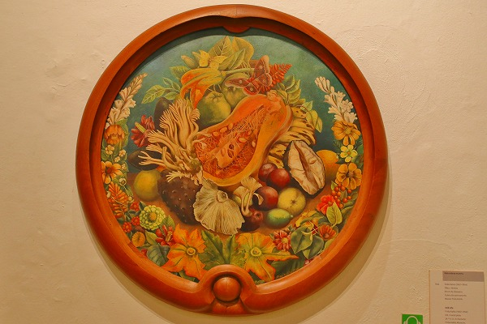

フリーダ・カーロ博物館/メキシコシティ Museo Frida Kahlo /CDMX
次に向かったのは
フリーダ・カーロ博物館。
メキシコシティ中心部から南の閑静な住宅街に位置する。
ここはフリーダ・カーロの生家にして終の棲家でもある場所で、今では彼女の画業を顕彰する博物館となっている。
実はここ、入場するのが結構大変で、ウェブ予約するか、並んで入場するかのどちらかなのだが、幸い閉館間際の時間帯の予約が取れたので行ってみた。
先程の項でも触れたが、フリーダ・カーロはメキシコを代表する画家である。
病と私生活に悩まされ続けた生涯だったが、その深い苦しみから生み出された作品は広く人々の共感を得るのである。
この建物は通称
青い家と呼ばれている。
もちろんこの青い壁から来るものだ。
この家は生家でもあると同時にディエゴとフリーダが過ごした家でもある。
その辺のややこしい夫婦関係を少しだけ説明させてもらいますよ。
二人が結ばれたのは1929年。フリーダ22才、ディエゴ43才の事であった。
ディエゴは既に人気を博し、アメリカで活動していた。
その後、1933年にメキシコに戻り、建てたのが先のディエゴとフリーダの家だったわけ。
ところが、国に帰るとディエゴがフリーダの妹と関係を持ってしまう。
これに激怒したフリーダは（前の項で書きましたね）…。
更にニューヨークでの個展を成功させたフリーダは1939年に離婚。
しかし間もなくフリーダの病が悪化。
すったもんだの挙句、翌年にはディエゴと再婚することになっちゃったのである。
で、再婚後の1940年からフリーダが亡くなる1954年まで二人が住んだのが、この家なのだ。
青い壁が特徴的な家。
で、本宅へ。
屋内は主にフリーダの生涯を紹介する展示が中心だ。
先程のディエゴの家とは対照的である。
ガラスケースに納まったフリーダの装身具の数々。
最晩年の1953年、容体が悪化したため彼女は右足を切断している。
その後、使用した義足が展示されていた。
傍らには対となる左足のブーツが。
子供の頃、発した病によって右足は成長しなかったという。
そのため左右の足の長さが異なっていたので靴のヒールの高さも御覧の通り違っていたのだ。
10代の頃の交通事故で背骨を痛めたためコルセットを常用していたようだ。
そのコルセット。
彼女の作品には自画像が多い。
そのうちのひとつ。
これもまたコルセットを身に着けている。

肉感的な植物画。
さて。
ここでフリーダの紹介をしたかったのには理由がありまして。
彼女はメキシコ版絵馬であるエクスヴォトのコレクターでもあったのだ。
フリーダ・カーロ博物館には彼女の集めたエクスヴォトが展示されている。
事故や病気に振り回され続けた彼女の人生を象徴するかのようなエクスヴォトが多かった。
このような人々の願いを身近に置くことによって
事故や病で苦しんでいるのが自分だけではない、と認識しようとしていたのだろうか。
このようなエクスヴォトは彼女の作風にも大いに影響を与えている。
これは1932年の「ヘンリー・フォード病院」という作品。
ベッドの上に横たわる血まみれの裸婦はフリーダ自身だろう。そこから赤い糸で繋がったものは彼女が失ったものなのだろう。
嬰児、骨盤、子宮などが描かれている。
彼女は1930年、1932年、1934年と立て続けに3度流産を体験している。
その流産体験をエクスヴォトの画面に似せて作品としているのだ。
彼女の厳しい心象風景の表現をメキシコの伝統的な苦しみからの解放を願うエクスヴォトの画風に託したところに
彼女が心から「何か」に救われたいと願っていたのだろう。
ただし、そこには救い主である神の姿は描かれていない。
社会主義に傾倒した彼女にはエクスヴォトにシンパシーを抱いていたが神そのものの存在には疑問を持っていたのかもしれない。
ちょっとした刺し傷（1935年コピー）
これもエクスヴォトの図案をかなり意識した作品。
当時のとある殺人事件をモチーフとしいる。
犯人の「ちょっと刺し傷を与えただけだ」というコメントに反応したもの。
しかし、この時期、夫の関係はこじれにこじれていた。その夫婦関係を表現したのではなかろうか。
二人が食事をしていたであろうキッチン。
感極まってチューしてる若いカップル。
君たち、ディエゴとフリーダはそんな簡単な関係じゃないかんね。盛り上がるのも大概にしとき。
寝室。
他にも様々な部屋にフリーダの趣向を象徴するモノが飾られていた
伝統的な仮面。
骸骨をあしらったオブジェ。
常用していたと思われる薬品。
そしてアトリエには彼女が車椅子を使って絵を描いていた様子が伺える。
晩年になると彼女は起き上がることすらできず寝たきりの状態で絵を描いていたという。
部屋に飾られていた胎児の医学ポスター。
やはり3度の流産は彼女の精神に深く傷を残したのだろう。
絶筆。Viva La Vida 人生万歳。
幼いころからの障害、事故による大怪我、30数回の手術、度重なる流産、足の切断、絶え間ない投薬。
数々の栄光、夫の浮気、自身の恋愛。
そんな波乱万丈の人生の締めくくりがこのスイカの絵画だったのだ。
なんともなー。
…スミマセン。
フリーダとエクスヴォトのハナシだけをするつもりだったんですけど色々と話し過ぎました。
でもフリーダの絵が好きな人は是非訪れて欲しいスポットなのです。
全然関係ないけど、私のSNSのプロフ画像はここの壁の前で撮りました。
それだけ思い入れのある場所だった、ということで。
次の修行へGOGOGO！